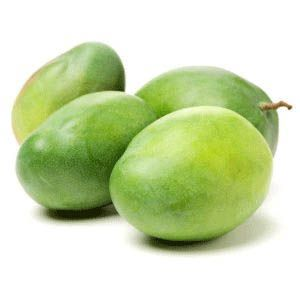

What's new?
Indian Mango
The Indian Mango, also known as the Katchamita, is a much smaller mango than other kinds.
Watch out for manong vendor who pushes his cart of green mangoes, with sticks of singkamas and bottles of bagoong on the streets. You'll see he is peddling a mango that is very different from the kalabaw mango.
Opposite of the lure of the sweetest mango, this variety is actually best eaten while still vibrantly green and unripe. The unripe green mango has a sour taste that while sour, isn't as sharp as other unripe mangoes. This sourness is what makes this variety of mangoes so enjoyable to eat, especially when paired with bagoong. When ripe, the flesh turns yellow and loses its sour taste and becomes sweet.